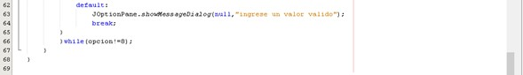
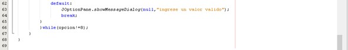

UNIDAD 3: Estructuras Lineales
3.1 Pilas (Stacks)
3.1.1 Representación en Memoria
Una pila se representa en memoria de manera secuencial, ya sea utilizando un array o una lista enlazada.
- Con Arrays: Los elementos se almacenan de forma contigua, y el índice de la cima o top de la pila se ajusta dinámicamente con las operaciones push (agregar) y pop (retirar). El espacio de memoria es fijo y la estructura necesita una gestión del tamaño.
- Con Listas Enlazadas: Cada elemento (nodo) de la lista contiene un valor y una referencia (o puntero) al siguiente nodo. El último nodo de la lista (el tope de la pila) se considera el elemento más reciente.
3.1.2 Operaciones Básicas
Las operaciones en una pila están centradas en el acceso y manipulación de los elementos en la cima:
- Push: Agrega un elemento al tope de la pila.
- Pop: Elimina y retorna el elemento del tope de la pila.
- Peek (o Top): Devuelve el valor del elemento superior sin modificar la pila.
- isEmpty: Verifica si la pila está vacía.
- isFull (en el caso de un array): Verifica si la pila ha alcanzado su capacidad máxima.
3.1.3 Aplicaciones
Las pilas tienen varias aplicaciones útiles en programación:
- Manejo de funciones recursivas: Cada llamada recursiva se apila en el stack del sistema, permitiendo el regreso a la ejecución previa.
- Evaluación de expresiones: Se utilizan pilas para convertir y evaluar expresiones matemáticas en notación postfija.
- Historial de navegación web: Los navegadores utilizan pilas para mantener el historial de páginas visitadas, permitiendo la opción de "volver atrás".
- Deshacer operaciones en software: Muchos editores y herramientas permiten deshacer acciones utilizando pilas para almacenar las modificaciones realizadas.
3.2 Colas (Queues)
3.2.1 Representación en Memoria
Las colas también pueden implementarse utilizando un array o una lista enlazada:
- Con Array Circular: La representación circular evita la fragmentación al utilizar el espacio de memoria de manera eficiente, permitiendo que el último elemento apunte al primero cuando se alcanza el final del array.
- Con Lista Enlazada: Cada nodo tiene una referencia al siguiente nodo, con un puntero al primer y al último nodo de la cola. Las operaciones de inserción y eliminación se realizan en ambos extremos.
3.2.2 Operaciones Básicas
Las operaciones fundamentales en una cola son:
- Enqueue: Agrega un elemento al final de la cola.
- Dequeue: Elimina el primer elemento de la cola.
- Front: Devuelve el elemento al frente sin eliminarlo.
- isEmpty: Verifica si la cola está vacía.
- isFull: Verifica si la cola ha alcanzado su capacidad máxima.
3.2.3 Tipos de Colas
Existen varias variaciones de colas que se utilizan según el tipo de requerimiento:
- Cola Simple: Sigue el principio FIFO (First In, First Out), es decir, el primer elemento insertado será el primero en salir.
- Cola Circular: La cola se organiza de tal forma que, cuando el final de la cola alcanza el último espacio, vuelve a comenzar en el inicio, haciendo un uso más eficiente de la memoria.
- Cola de Prioridad: Los elementos de la cola tienen diferentes niveles de prioridad; los de mayor prioridad se sirven primero.
- Deque (Double-Ended Queue): Permite la inserción y eliminación de elementos desde ambos extremos, tanto desde el frente como desde el final de la cola.
3.2.4 Aplicaciones
Las colas tienen aplicaciones esenciales:
- Manejo de procesos en sistemas operativos: Planificación de tareas en un sistema operativo, donde los procesos se gestionan en una cola.
- Simulación de sistemas de espera: Como en sistemas de atención al cliente o en los servidores de impresión, donde las tareas se procesan en el orden en que llegan.
- Búsqueda en amplitud (BFS): En algoritmos de búsqueda de grafos, se utiliza una cola para explorar los nodos en orden de cercanía.
3.3 Listas (Linked Lists)
3.3.1 Operaciones Básicas
Las listas enlazadas son estructuras dinámicas que permiten insertar o eliminar elementos de manera eficiente:
- Inserción: Se puede insertar un nuevo nodo al principio, al final o en cualquier posición intermedia de la lista.
- Eliminación: Retirar un nodo de cualquier lugar de la lista.
- Recorrido: Acceder a cada uno de los elementos de la lista, nodo por nodo.
3.3.2 Tipos de Listas
Existen diferentes tipos de listas enlazadas, según las necesidades del problema:
- Lista Simplemente Enlazada: Cada nodo contiene un puntero al siguiente nodo, permitiendo recorrerla en una sola dirección.
- Lista Doblemente Enlazada: Los nodos contienen dos punteros: uno al siguiente nodo y otro al nodo anterior, lo que facilita el recorrido en ambas direcciones.
- Lista Circular: El último nodo apunta de nuevo al primer nodo, formando un ciclo.
3.3.3 Aplicaciones
Las listas enlazadas tienen varias aplicaciones útiles:
- Gestión de Memoria: Son útiles para estructuras de datos donde el tamaño cambia constantemente y no se requiere espacio contiguo.
- Sistemas de Música: Para la representación de listas de reproducción donde los elementos pueden ser fácilmente insertados o eliminados en cualquier lugar.
- Representación de Polinomios: Las listas pueden usarse para representar términos de un polinomio, donde cada nodo contiene el coeficiente y el exponente.
EJERCICIO DE UNIDAD: MODIFICAR UNA PILA INGRESADA
 
